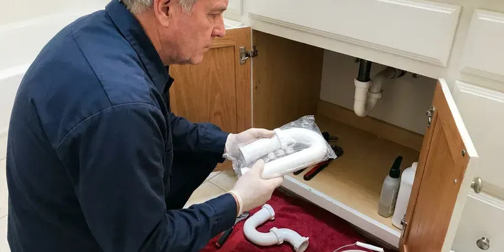

Shower Installation in Westland, MI
For dependable shower installation in Westland, MI, look no further than CHV Plumbing. We handle all types of shower layouts.
- Guaranteed Work
- Licensed Plumbers
- Licensed, Insured Plumbers
- Valves Set to Code
Professional Shower Installation for Your Bathroom Remodel in Westland, MI.
Call CHV Plumbing today for a free estimate on your new shower.
Professional Shower Installation Services in Westland, MI
CHV Plumbing installs the plumbing for new showers, including valves, supply lines, shower arms, body sprays, pans and drains. We set each component at the right height and depth for your finished wall and pressure-test before tile goes on. That safeguards your investment from leaks you cannot see.
Our expertise includes:
- Pressure-balance and thermostatic valve rough-in for new showers
- Linear drain and curbless shower drain installation on slab
- Multi-head, body spray and rain shower plumbing layouts

Additional Bathroom Plumbing Services in Westland, MI
From toilets to showers, our bathroom plumbing team in Westland, MI handles repairs, installs, and upgrades with tidy, code-compliant work.


Customers
Why Choose CHV Plumbing for Shower Installation in Westland, MI?
Choosing CHV Plumbing for your shower installation means you are getting service from skilled professionals who understand local building requirements. We focus on durable installations that stand up to daily use and local weather.
- Correct Slope, Pans and drains are set so water drains fully without puddles.
- Licensed Plumbers, Our technicians are fully licensed and insured, guaranteeing expert service for your shower installation.
- Permits Handled, We pull permits and coordinate inspections when required.
Citywide Coverage
No matter where you are located in Westland, our experienced plumbers are just a call away for your shower installation project. We are familiar with the diverse housing styles across Westland, ensuring tailored solutions for every home.
Experienced Team
Our team of plumbers has broad experience with all types of shower installations, from basic tub-shower combos to detailed custom designs. We stay updated on the latest plumbing technologies and installation techniques.
Safety-First Approach
Safety and code compliance come first in every shower installation we perform. We adhere strictly to all local Westland and state plumbing codes, ensuring your new shower is safe and up to standard.
Trusted Certified Westland Plumbing Services Professionals
At CHV Plumbing, we take pride in providing certified plumbing services throughout Westland, MI. Backed by recognized industry credentials, our experienced plumbers combine technical skill with genuine customer care. Whether it is repair, installation, or maintenance, we follow strict safety and quality standards to deliver lasting results you can trust.
Call Us Now PHCC Plumbing Contractor Recognition
PHCC Plumbing Contractor Recognition Better Business Bureau (BBB) Accreditation
Better Business Bureau (BBB) Accreditation Angi Certified Pro
Angi Certified Pro ISO 9001 Quality Management Certification
ISO 9001 Quality Management CertificationDependable Shower Installation Services in Westland, MI
Shower Pan Installation in Westland
A correctly installed shower pan is essential for preventing leaks and protecting your bathroom subfloor. CHV Plumbing carefully installs various shower pan types, including pre-fabricated units and custom-tiled pans with proper waterproofing membranes. We make sure the pan is level and correctly sloped toward the drain, a vital step that prevents expensive water damage in the long run. We use high-quality sealants for lasting protection.

New Construction Shower Installation in Westland, MI
For new homes and additions, we rough in shower valves, supply lines and drains during framing. Valves are set to depth for the planned wall finish, and drains are located for the chosen pan. We pass rough-in inspections and return to install trim after tile. Our scheduling keeps your build on track.
Commercial Shower Installation in Westland, MI
CHV Plumbing also offers shower installation services for commercial properties in Westland, such as gyms, locker rooms, and employee facilities. We understand the higher demands of commercial plumbing systems and install durable, high-capacity showers designed for heavy use. Our installations meet commercial building codes and keep downtime to a minimum for your business during the process. We work steadily to complete projects on schedule.
Curbless Shower Installation in Westland
Curbless showers have no step, which makes them easier to use and gives a modern look. They require a recessed floor and careful drain placement, often with a linear drain. On a slab, we may need to lower the floor in the shower area. We work closely with your contractor to plan the slope and waterproof layers.
Cost-Effective Shower Upgrades in Westland, MI
Investing in a new shower can significantly improve your home's value and comfort. CHV Plumbing helps homeowners in Westland choose cost-effective shower solutions that fit their budget and needs. We go over various options, from basic, durable units to more elaborate, water-saving models. Our transparent pricing means you know the full cost upfront, allowing you to make an informed decision without hidden fees.
Rain and Multi-Head Shower Installation in Westland
Rain showerheads, body sprays and dual heads need careful planning for valve capacity and water pressure. We install thermostatic valves with volume controls and diverters to run multiple outlets. We also confirm your water heater can handle higher flow. The result is a spa-like shower that works the way it should.
Shower Valve & Fixture Installation in Westland, MI
Beyond the main shower unit, we also install new shower valves, diverters, and various fixtures. This includes pressure-balancing valves to prevent scalding, thermostatic valves for consistent temperature, and different showerhead types like rain showers or handheld units. Our team ensures all connections are watertight and that the fixtures operate smoothly, enhancing your showering experience. We can upgrade outdated fixtures to newer, more efficient models.

Prefab Shower Unit Installation in Westland, MI
Fiberglass and acrylic shower units are affordable and quick to install. We set the base, connect the drain and install the valve and trim. Prefab units are ideal for guest baths, rentals and guest houses. We make sure the base is fully supported so it does not flex or crack.
Shower Installation Near Me in Westland, MI
When you search for shower installation near me, you want a plumber who coordinates well with your remodel. CHV Plumbing schedules rough-in and trim visits around your contractor. That keeps your project on track.
Our commitment to the Westland community means we understand the plumbing needs of local homes. From older houses with unusual plumbing configurations to newer builds, CHV Plumbing has the expertise for any shower installation project near you.
CHV Plumbing at a Glance
- Fully licensed plumbing team covering Westland, MI
- 24/7 emergency service with same-day scheduling
- Clear written estimates, no hidden fees
- 4.9-star rated by 670+ Michigan customers
Westland Map
Westland Information
- Population
- 82,574
- Area codes
- 734/248/313
- Service area
- Westland and communities within 40 miles
- Nearby
- Dearborn Heights, Livonia, Dearborn, Taylor
Homes around Westland on private wells usually benefit from a water test before picking a filtration system, since mineral levels vary widely. Soils in Michigan range from heavy clay to sandy ground, and many areas have a high water table that keeps basements damp. Proper shower installation in Westland, MI guards against leaks that can lead to foundation and structural issues.
Expert Services
Trust our professionals for reliable CHV Plumbing solutions in Westland, MI.
Our Specialized Plumbing Services in Westland, MI
At CHV Plumbing, we provide a complete range of plumbing services across Westland, MI. From leak detection to full system installations, our team ensures fast, precise, and affordable service for both residential and commercial properties. Explore our core services below:


How Our Shower Installation Process Works in Westland, MI
CHV Plumbing follows a structured approach to every shower installation, delivering quality results for your Westland home.
Request a Quote
Start by calling CHV Plumbing at (810) 380-5918 or filling out our online form to schedule an initial consultation. We will discuss your shower installation needs and preferences.
Site Assessment
Our plumber visits your home in Westland to assess the existing plumbing, measure the space, and discuss suitable shower options. We provide a detailed, clear estimate.
Professional Installation
Our licensed technicians expertly install your new shower, handling all plumbing, sealing, and finishing work. We make sure it meets all local codes and works properly.
Frequently Asked Questions About Shower Installation in Westland
The cost of shower installation in Westland, MI can vary widely, usually ranging from $1,000 to $5,000 or more, depending on the shower type, materials, and complexity of plumbing changes. A basic tub-shower combo might be on the lower end, while a custom tiled walk-in shower with multiple features will be higher. We provide a detailed, upfront estimate after reviewing your specific project.
Yes, in most cases, significant plumbing work like new shower installation or relocation requires a plumbing permit in Westland to ensure compliance with local building codes. CHV Plumbing handles all required permit applications on your behalf, ensuring your installation is fully compliant.
Yes, CHV Plumbing regularly performs tub-to-shower conversions in Westland homes. This involves removing the existing bathtub and installing a new shower base, walls, and fixtures. It is a popular option for improving accessibility and modernizing bathrooms without a full remodel. We make sure all new plumbing connections are correctly installed and sealed.
CHV Plumbing stands behind our shower installations with a solid warranty on our workmanship, typically for one year. Manufacturer warranties on the shower unit and fixtures will also apply, usually ranging from one year to a lifetime, depending on the brand and component. We provide all warranty details before beginning work.
A standard shower installation, such as a tub-shower replacement, can often be completed within one to two days. More complex projects, like custom tiled walk-in showers or those requiring significant plumbing rerouting, might take three to five days, or longer if extensive demolition or structural changes are involved. We provide an estimated timeline during your initial consultation.
CHV Plumbing installs a wide range of trusted shower brands, including but not limited to Kohler, Moen, Delta, American Standard, and Sterling. We can work with any brand you prefer or recommend options based on your budget and desired features, confirming quality and availability for Westland homeowners.
CHV Plumbing installs a wide range of reputable shower brands, including Delta, Moen, Kohler, American Standard, and Sterling. We can also work with specific brands or custom units you may prefer. Our focus is on quality and confirming compatibility with your existing plumbing and the look you want.
Yes, CHV Plumbing understands that a new shower installation can be a significant investment, and we offer various financing options to help make your project more affordable. Please contact our team at (810) 380-5918 to discuss the available plans that can fit your budget and allow you to get the shower you need without delay.
What People Are Saying About Our Plumbing Experts?

Laura S.
I scheduled a water heater replacement, and the team made the process smooth and affordable. The new unit works perfectly, and they cleaned up after completing the job.
Water Heater Replacement · Novi, MI
Patricia H.
We had a slab leak that two other companies could not find. CHV Plumbing located it in under an hour, explained our options, and the price matched the quote to the dollar.
Slab Leak Repair · Farmington Hills, MI
James P.
Our commercial plumbing system had a leak under the sink, and CHV Plumbing handled it professionally. The plumbers arrived quickly and restored everything without disruption to our customers.
Commercial Plumbing · Dearborn Heights, MI
Emily R.
I called CHV Plumbing for plumbing repair, and the technician was fast, polite, and thorough. They explained the problem clearly and fixed it the same day. I will definitely hire them again. Highly recommended!
Plumbing Repair · Taylor, MI
Daniel K.
A pipe burst at 11 pm and they actually answered. The plumber showed up within the hour, shut everything down, and had us back to normal the next morning. Could not ask for more.
Emergency Plumbing · Taylor, MIRobert G.
The trenchless sewer replacement saved our front yard. They walked us through the camera inspection footage first so we knew exactly what we were paying for.
Sewer Line Replacement · Novi, MI